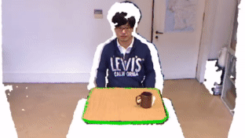
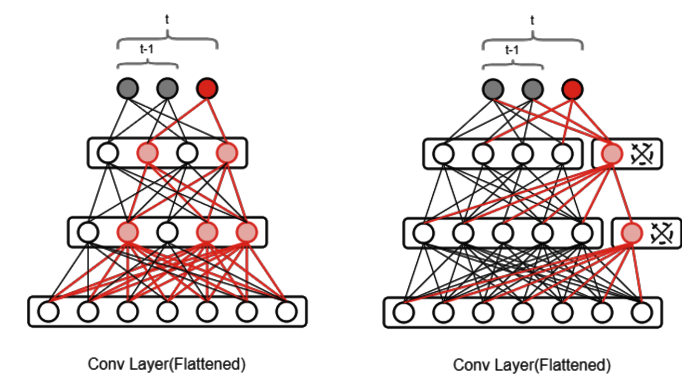

Research & Publication
My research interests focus on the intersection of robotics, machine learning
and machine vision. I am interested in developing algorithms for intelligent robotic systems based on lifelong/continual learning and interactive
environment exploration to capable robots to demonstrate strong performance in helping humans in household and care-taking tasks, manufacturing and logistics, transportation and monitoring, and many other unstructured and human-centric environments.
I have been investigating on active perception and manipulation, where robots use their mobility and manipulation capabilities to model the world better. I have evaluated my works on different platforms including PR2, robotic arms, and humanoid robots.
Please navigate the publications pages of my research group (IRL-Lab), if you are intersted to know more our research.
In IRL-Lab, we mainly focus on interactive robot learning to make robots capable of
learning in an open-ended fashion by interacting with non-expert human users. More specifically, we have been developing this goal over six particular research directions:

1 - Perception and Perceptual Learning
We are interested in attaining a 3D understanding of the world around us. In particular,
the perception system provides important information that the robot has to use for interacting with users and
environments.
2- Object Grasping and Object Manipulation
A service robot must be able to interact with the environment as well as human users.
We are interested in fundamental research in object-agnostic grasping, affordance detection, task-informed grasping, and object manipulation.

3- Lifelong Interactive Robot Learning
A service robot must be able to interact with the environment as well as human users.
We are interested in fundamental research in object-agnostic grasping, affordance detection, task-informed grasping, and object manipulation.
4- Dual-Arm Manipulation
A dual-arm robot has very good manipulability and maneuverability which is necessary
to accomplish a set of everyday tasks (dishwashing, hammering).
We are interested in efficient imitation learning, collabrative manipulation, and large object manipulation.

5- Dynamic Robot Motion Planning
We are interested in attaining fully reactive manipulation functionalities in a closed-loop manner.
Reactive systems have to continuously check if they are at risk of colliding while planners should check every configuration that the robot may attempt to use.

6- Exploiting Multimodality
A service robot may sense the world through different modalities that may provide visual, haptic or auditory cues about the environment.
In this vein, we are interested in exploiting multimodality for learning better representations to improve robot's performance.
Contact
Dr. Hamidreza Kasaei
Artificial Intelligence Department,
University of Groningen,
Bernoulliborg building,
Nijenborgh 9 9747 AG Groningen,
The Netherlands.
Office: 340
Tel: +31-50-363-33926
Email: hamidreza.kasaei@rug.nl